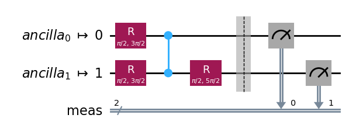
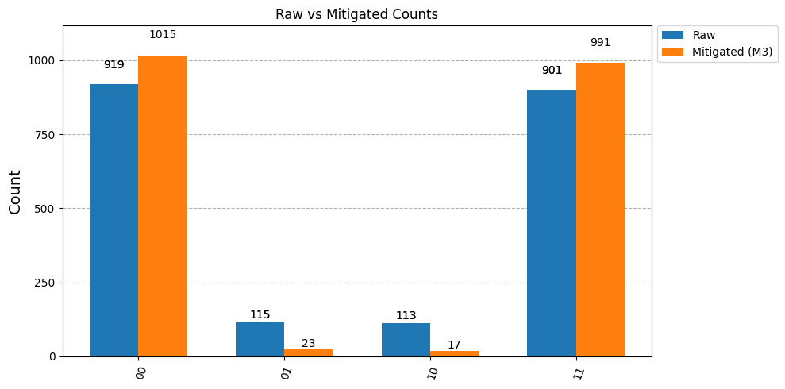
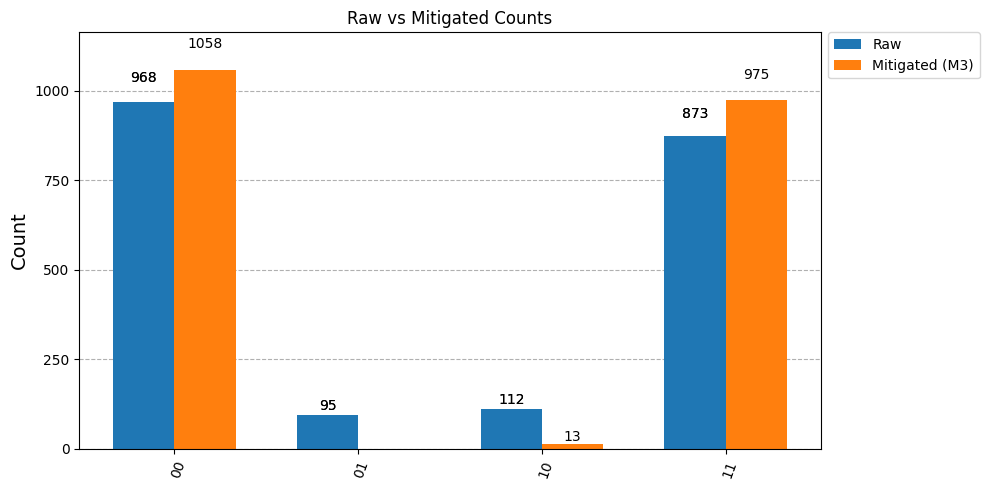

Example: Advanaced Readout Mitigation#
Setup Backend#
FiQCI EMS comes with a wrapped FiQCIBackend around Qiskit IQM’s IQMBackend which allows configuring the mitigation level.
from iqm.qiskit_iqm import IQMProvider
from fiqci.ems import FiQCIBackend
from qiskit import QuantumCircuit, transpile
url = None
quantum_computer = None
# Connect to an IQM quantum computer using the provider
if url is not None and quantum_computer is not None:
provider = IQMProvider(url=url, quantum_computer=quantum_computer)
backend = provider.get_backend()
else:
# Or using a noisy simulator
from iqm.qiskit_iqm import IQMFakeAphrodite
backend = IQMFakeAphrodite()
# Wrap backend with mitigation level 1 (readout error mitigation)
mitigated_backend = FiQCIBackend(backend, mitigation_level=1, calibration_shots=2048, calibration_file="cals.json")
print(f"Backend: {backend.name}")
print(f"Mitigation level: {mitigated_backend.mitigation_level}")
Backend: IQMFakeAphroditeBackend
Mitigation level: 1
Bell State Preparation with mitigation#
# Create a Bell state circuit
qc = QuantumCircuit(2)
qc.h(0)
qc.cx(0, 1)
qc.measure_all()
# Transpile for specific qubits
qubits = ["QB9", "QB17"]
qubit_indices = [backend.qubit_name_to_index(q) for q in qubits]
qc_transpiled = transpile(qc, backend=backend, initial_layout=qubit_indices)
display(qc_transpiled.draw(output="mpl"))
# Run with automatic mitigation!
shots = 2048
job = mitigated_backend.run(qc_transpiled, shots=shots)
mitigated_counts = job.result().get_counts()
print("Mitigated counts:", mitigated_counts)

Mitigated counts: {'10': 17, '01': 23, '11': 991, '00': 1015}
Get Metadata#
Metadata is added to the Qiskit Result object including the original raw counts
print(job.result().results[0].header)
raw_counts = job.result().results[0].header["fiqci_ems"]["raw_counts"]
print(raw_counts)
{'creg_sizes': [['meas', 2]], 'global_phase': 0.0, 'memory_slots': 2, 'n_qubits': 54, 'name': 'circuit-19877', 'qreg_sizes': [['q', 2], ['ancilla', 52]], 'metadata': {}, 'fiqci_ems': {'mitigation_level': 1, 'mitigation_method': 'M3', 'calibration_shots': 2048, 'raw_counts': {'01': 115, '11': 901, '10': 113, '00': 919}}}
{'01': 115, '11': 901, '10': 113, '00': 919}
mitigated_counts
Visualizing the Effect of Mitigation#
Let’s visualize how readout error mitigation improves the measurement results:
from qiskit.visualization import plot_histogram
# Compare raw vs mitigated results
plot_histogram(
[raw_counts, mitigated_counts],
legend=["Raw", "Mitigated (M3)"],
title="Raw vs Mitigated Counts",
bar_labels=True,
figsize=(10, 5),
)

Advanced Usage: Direct M3IQM Control#
For users who need fine-grained control over the mitigation process, you can use the M3IQM class directly. This allows you to:
Inspect calibration matrices
Control calibration strategies (balanced, independent, marginal)
Access quasi-probability distributions before conversion
Calculate expectation values and standard deviations
from fiqci.ems.mitigators.rem import M3IQM
from fiqci.ems.utils import probabilities_to_counts
# Initialize M3 mitigator
m3_mitigator = M3IQM(backend)
# Calibrate for specific qubits
m3_mitigator.cals_from_system(qubits=qubit_indices, shots=2048, method="balanced")
# Inspect calibration matrices
print("QB26 (index", qubit_indices[0], ") calibration matrix:")
print(m3_mitigator.cals_to_matrices()[qubit_indices[0]])
print("\nQB27 (index", qubit_indices[1], ") calibration matrix:")
print(m3_mitigator.cals_to_matrices()[qubit_indices[1]])
QB26 (index 8 ) calibration matrix:
[[0.9555664 0.05566406]
[0.04443359 0.94433594]]
QB27 (index 16 ) calibration matrix:
[[0.9526367 0.05566406]
[0.04736328 0.94433594]]
# Run circuit and get raw counts
raw_counts_manual = backend.run(qc_transpiled, shots=shots).result().get_counts()
# Apply M3 correction manually
quasi_dist = m3_mitigator.apply_correction(raw_counts_manual, qubits=qubit_indices, return_mitigation_overhead=True)
# Get expectation value and standard deviation
expval, stddev = quasi_dist.expval_and_stddev()
print(f"Expectation value: {expval:.4f} ± {stddev:.4f}")
# Convert to nearest probability distribution
mitigated_probs = quasi_dist.nearest_probability_distribution()
mitigated_counts_manual = probabilities_to_counts(mitigated_probs, shots)
print("\nRaw counts:", raw_counts_manual)
print("Mitigated counts:", mitigated_counts_manual[0])
Expectation value: 0.9875 ± 0.0279
Raw counts: {'01': 95, '11': 873, '10': 112, '00': 968}
Mitigated counts: {'10': 13, '11': 975, '00': 1058}
from qiskit.visualization import plot_histogram
# Compare raw vs mitigated results
plot_histogram(
[raw_counts_manual, mitigated_counts_manual[0]],
legend=["Raw", "Mitigated (M3)"],
title="Raw vs Mitigated Counts",
bar_labels=True,
figsize=(10, 5),
)
